Panduan Admin Fakultas
Untuk staf urusan kerja sama fakultas: mengelola seluruh dokumen dan master data, memverifikasi realisasi kegiatan dari prodi, dan menjaga agar data akreditasi akurat.
01Peran Anda
Anda pemegang data kerja sama fakultas dan penentu keabsahan realisasi.
Yang dapat Anda lakukan
- Membuat, mengubah, menghapus, dan memulihkan kerja sama
- Mengelola master Mitra, Program Studi (termasuk NDTPS), dan Bentuk Kerja Sama
- Memverifikasi atau menolak realisasi yang diajukan prodi
- Mencatat dan mengubah realisasi, bukti, dan evaluasi keefektifan di semua prodi
- Menerima pengingat jatuh tempo untuk seluruh dokumen
- Mengunduh rekap PDF, ekspor Tridharma, dan simulasi LAMDIK
Yang tidak dapat Anda lakukan
- Menghapus data secara permanen (penghapusan hanya menyembunyikan)
- Membuat akun pengguna atau mengubah peran (dilakukan Super Admin lewat server)
02Memantau lewat dasbor
Mulailah hari dari dasbor: lihat yang akan berakhir, lalu cek antrean verifikasi.
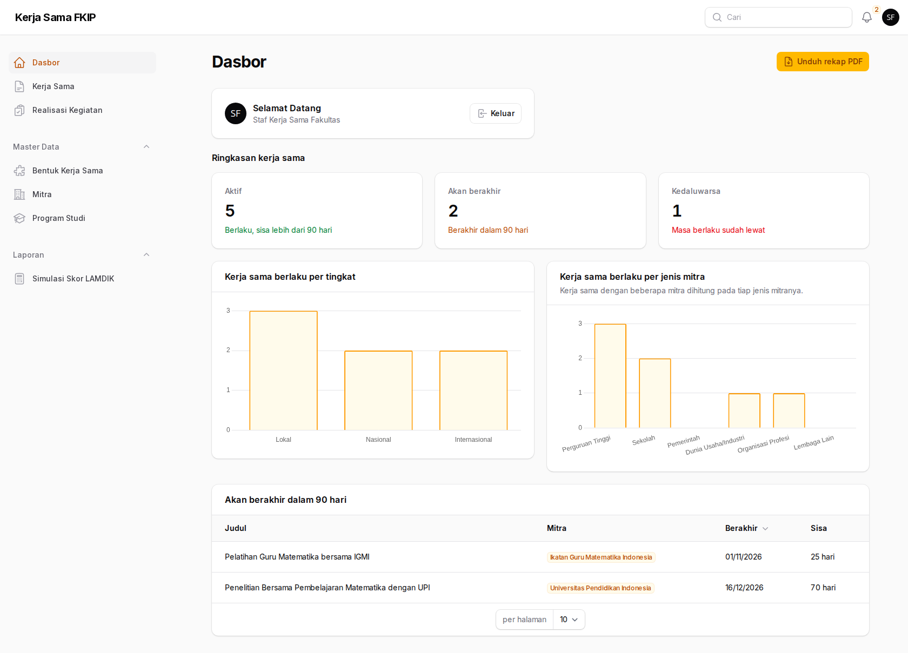
Rutinitas yang disarankan:
- Buka notifikasi (lonceng) dan tindak lanjuti pengingat 180/90/30 hari.
- Buka Realisasi Kegiatan dan saring Status = Diajukan untuk antrean verifikasi.
- Periksa tabel Akan berakhir di dasbor untuk menghubungi prodi dan mitra.
03Mengelola mitra
Dokumen hanya bisa dikaitkan dengan mitra yang sudah ada di master. Admin Prodi tidak dapat menambah mitra, jadi permintaan itu akan sampai ke Anda.
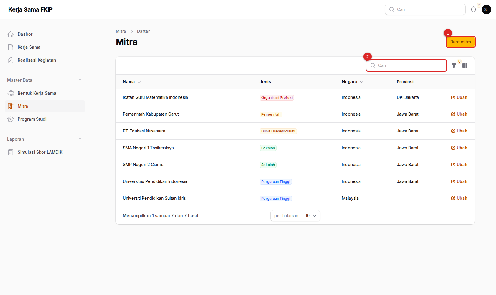
- Buat mitra — formulir mitra baru.
- Cari — cari nama atau negara mitra.
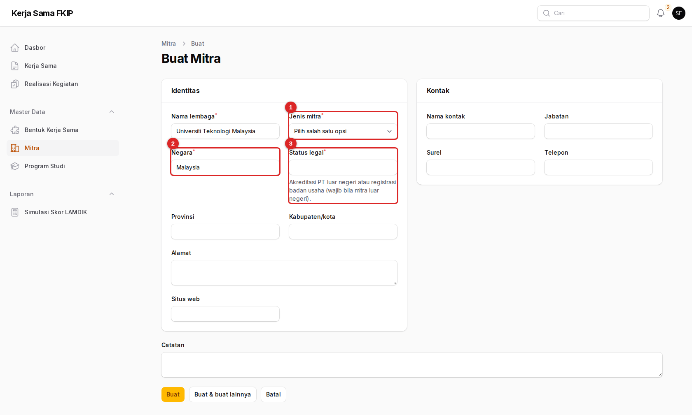
- Jenis mitra (wajib) — perguruan tinggi, sekolah, pemerintah, dunia usaha/industri, organisasi profesi, atau lembaga lain.
- Negara (wajib) — bawaan Indonesia. Isi nama negara bila mitra luar negeri.
- Status legal — otomatis menjadi wajib bila negaranya bukan Indonesia: akreditasi perguruan tinggi luar negeri atau registrasi badan usaha.
Pasangan nama + negara harus unik. Mitra luar negeri yang dikaitkan ke dokumen membuat dokumen itu otomatis berstatus internasional dan memerlukan persetujuan Dirjen. Pastikan negara diisi benar.
Bagian Kontak (nama, jabatan, surel, telepon) dan Catatan bersifat opsional, tetapi berguna saat mengurus perpanjangan.
04Program studi dan NDTPS
Daftar 13 program studi FKIP sudah terisi awal. Anda dapat memperbarui nama, jenjang, dan status aktif, serta mengisi NDTPS tahunan.
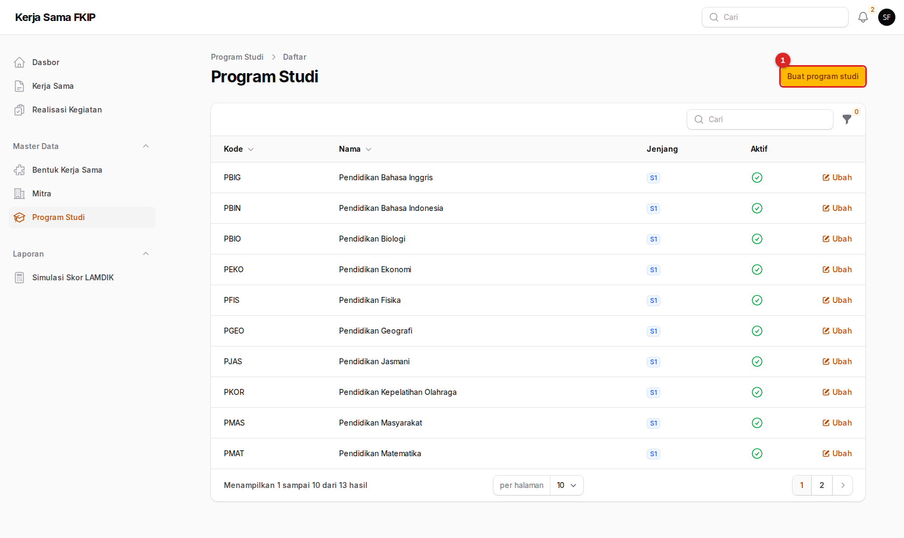
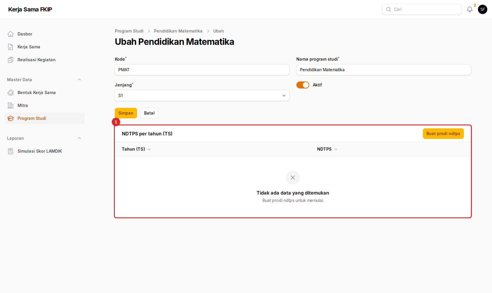
- NDTPS — jumlah dosen tetap prodi untuk satu tahun TS. Angka ini dipakai pada rumus Simulasi Skor LAMDIK.
Kode prodi dipakai sebagai kunci impor data. Jangan mengubahnya tanpa berkoordinasi dengan Super Admin.
Program studi yang dinonaktifkan tidak muncul pada pilihan prodi di formulir baru, tetapi data lamanya tetap ada.
05Bentuk kerja sama
Daftar baku bentuk kerja sama beserta pasal rujukan Permendikbud 14/2014.
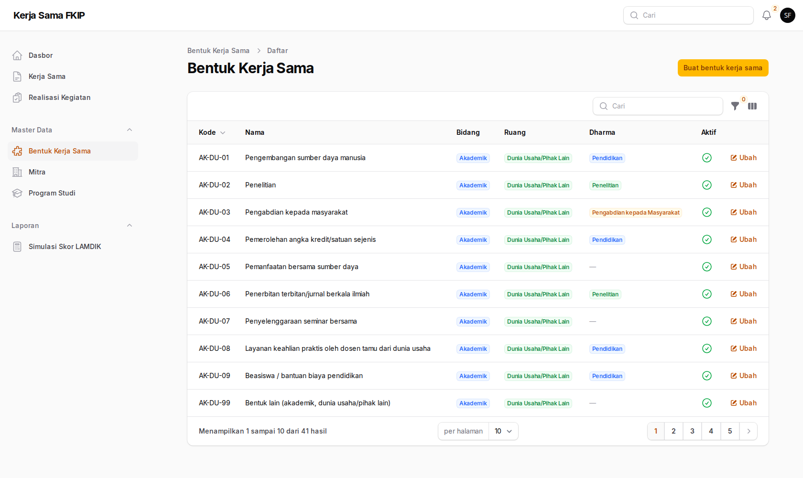
AK-DU-01).Setiap bentuk memiliki kode, nama, bidang, ruang, dharma bawaan, pasal rujukan, dan penanda Aktif. Dharma bawaan inilah yang mengisi kolom Dharma otomatis pada formulir realisasi. Hanya bentuk yang aktif yang dapat dipilih pada formulir baru.
06Mengelola dokumen kerja sama
Anda dapat mencatat dokumen untuk prodi mana pun. Langkah pengisian sama dengan yang dipakai Admin Prodi.
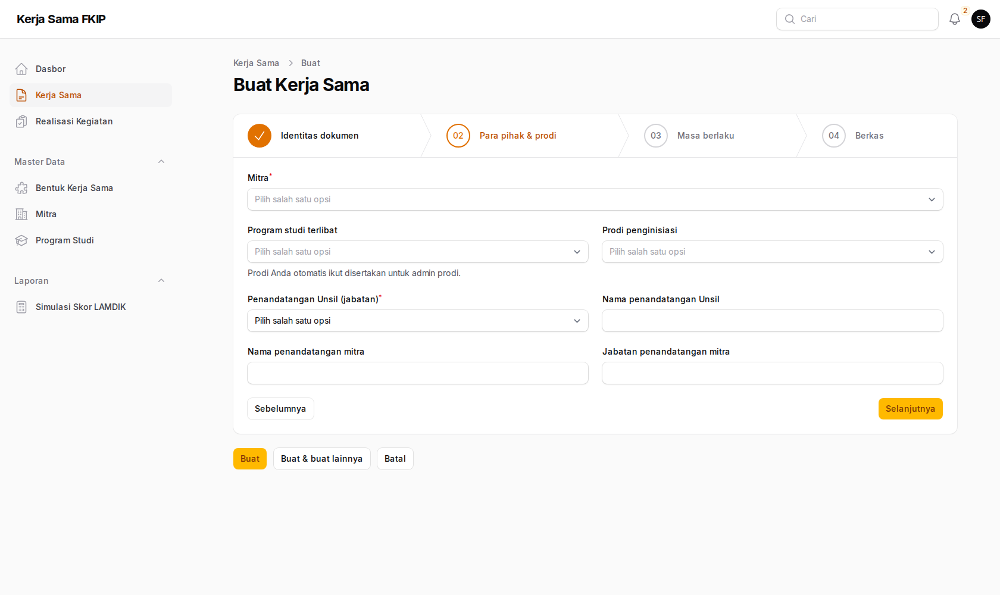
Rincian setiap isian formulir (identitas, para pihak, masa berlaku, berkas) dijelaskan pada panduan Admin Prodi.
Mengubah dan menghapus
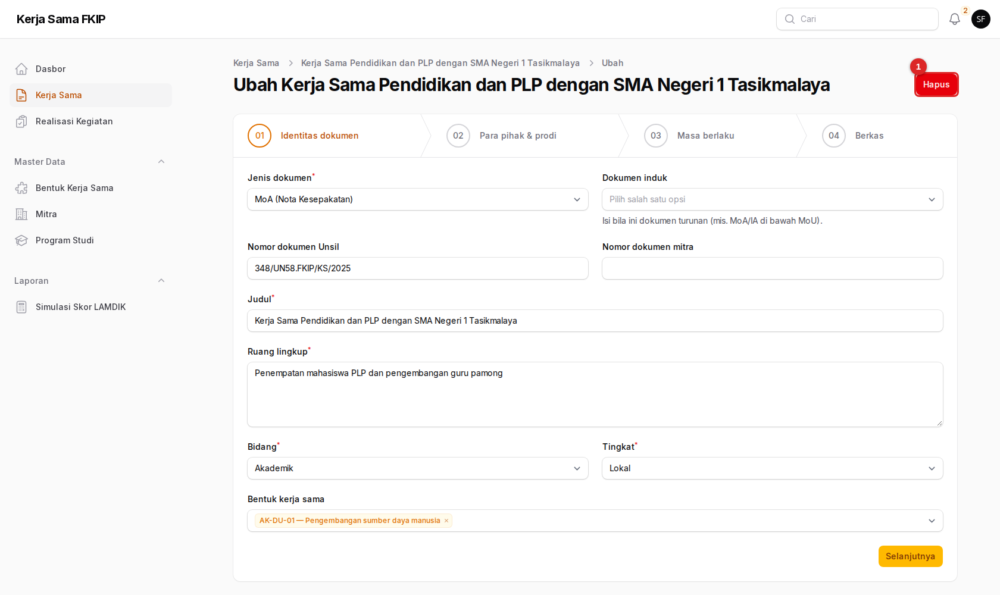
- Hapus — menyembunyikan dokumen dari daftar (dapat dipulihkan).
- Buka dokumen, tekan Ubah, perbaiki isian, lalu Simpan.
- Untuk menghapus, tekan Hapus dan konfirmasi.
- Untuk memulihkan, buka daftar Kerja Sama, buka Filter, atur Data terhapus, lalu tekan Pulihkan pada baris dokumen.
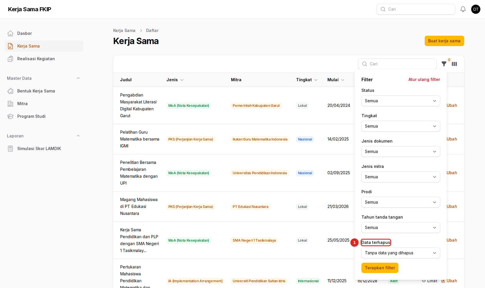
- Data terhapus — pilih untuk menampilkan dokumen yang sudah dihapus.
Dokumen yang dihapus tetap tersimpan, jadi penghapusan yang keliru dapat dipulihkan. Tidak ada penghapusan permanen.
07Memverifikasi realisasi kegiatan
Inilah kewenangan utama Anda. Realisasi hanya dihitung dalam akreditasi setelah Anda memverifikasinya.
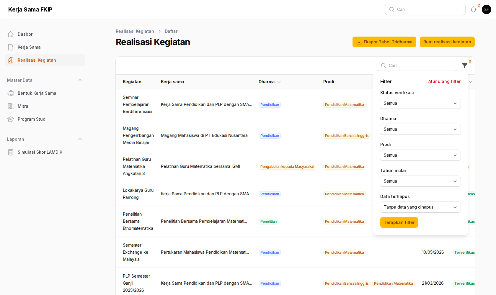
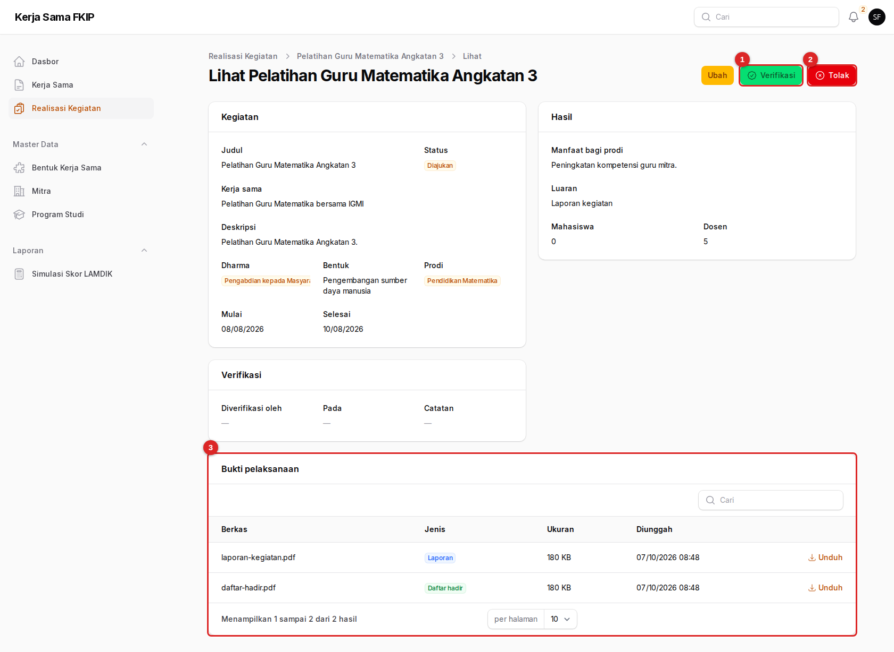
- Verifikasi — menyetujui realisasi.
- Tolak — mengembalikan realisasi dengan catatan.
- Bukti pelaksanaan — periksa tiap berkas dengan menekan Unduh.
- Buka realisasi yang berstatus Diajukan.
- Periksa kelengkapan isian: kerja sama dasar, dharma, tanggal, manfaat, dan jumlah peserta.
- Unduh dan periksa buktinya. Harus ada minimal satu bukti berjenis Laporan.
- Tekan Verifikasi bila sesuai, lalu konfirmasi. Status menjadi Terverifikasi dan tercatat siapa serta kapan memverifikasi.
Bila belum ada bukti berjenis Laporan, sistem menolak verifikasi dengan pesan “Unggah minimal satu bukti berjenis laporan sebelum diverifikasi.” Minta prodi melengkapi, atau tolak dengan catatan.
Menolak dengan catatan
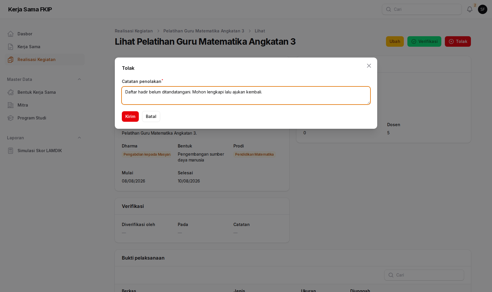
- Tekan Tolak.
- Tulis catatan yang spesifik: apa yang kurang dan bagaimana memperbaikinya.
- Tekan Kirim. Status menjadi Ditolak dan catatan tampil pada realisasi untuk dibaca prodi.
Catatan yang jelas (“daftar hadir belum ditandatangani”) menghemat bolak-balik. Setelah diperbaiki, prodi mengajukan ulang dan realisasi kembali ke antrean Anda.
Anda dapat mengubah realisasi apa pun lewat tombol Ubah dan juga mengajukannya atas nama prodi bila diperlukan, tetapi sebaiknya biarkan prodi yang melaporkan agar jejak pengusul tetap jelas.
08Evaluasi keefektifan
Penilaian tahunan per kerja sama yang menjadi indikator (b) pada skor LAMDIK.
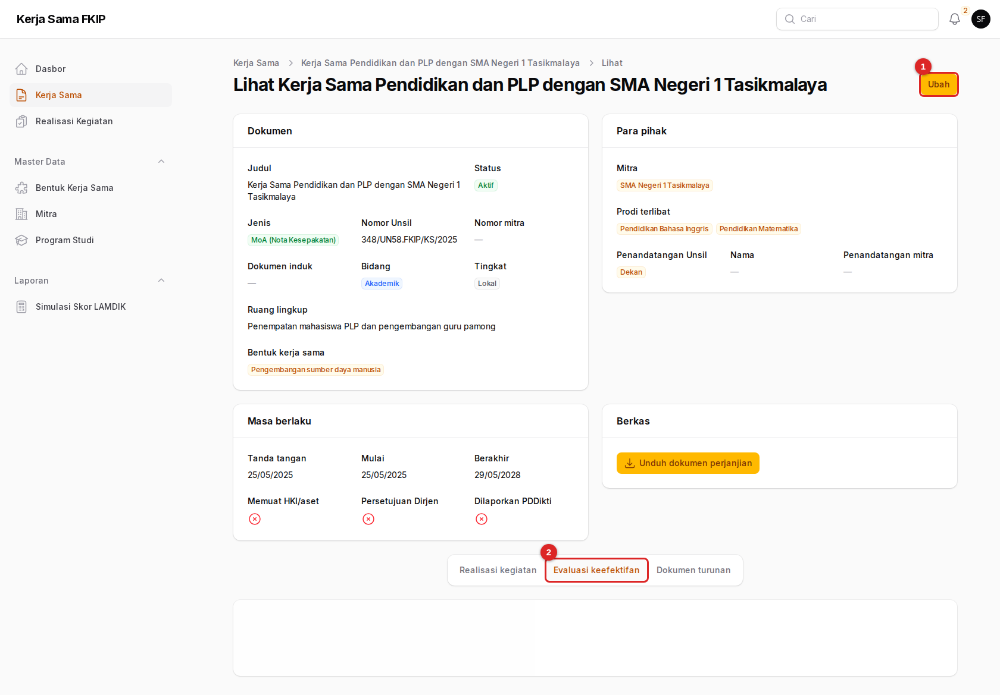
- Ubah — buka halaman Ubah untuk menambah evaluasi.
- Evaluasi keefektifan — daftar evaluasi: tahun TS, skor, rekomendasi, analisis, dan penilai.
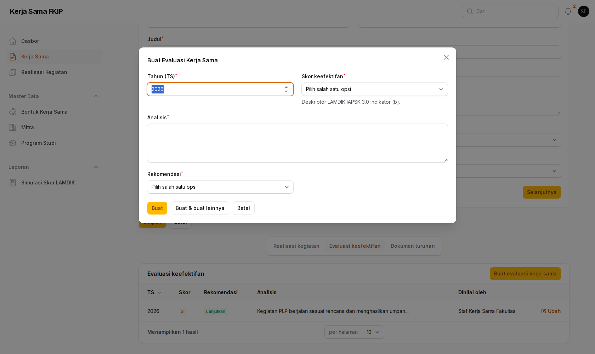
Rata-rata skor evaluasi per prodi dipakai sebagai nilai awal Skor (b) pada Simulasi Skor LAMDIK.
09Laporan dan ekspor
Tiga keluaran untuk pimpinan dan akreditasi.
| Keluaran | Di mana | Isi |
|---|---|---|
| Rekap PDF | Dasbor → Unduh rekap PDF | Status, per tingkat, per jenis mitra, akan berakhir, kedaluwarsa |
| Tabel Kerja Sama Tridharma (Excel) | Realisasi Kegiatan → Ekspor Tabel Tridharma | Realisasi terverifikasi TS-2 s.d. TS per prodi, tiga lembar |
| Simulasi Skor LAMDIK | Menu Laporan | Perhitungan skor elemen Kerja Sama Tridharma |
Langkah rinci ekspor dan simulasi dijelaskan pada panduan Admin Prodi dan panduan Pimpinan.
Semua keluaran bergantung pada kebenaran data. Pastikan antrean verifikasi sudah bersih sebelum mengekspor untuk borang.
10Bantuan
Tombol Verifikasi dan Tolak tidak muncul
Tombol hanya muncul pada realisasi berstatus Diajukan. Realisasi Draf belum dikirim prodi; realisasi Terverifikasi atau Ditolak sudah diputuskan.
Mitra sudah ada tetapi tidak muncul pada pilihan
Ketik nama mitra pada kolom pilihan untuk mencari. Bila tetap tidak ada, periksa penulisan nama pada menu Mitra, mungkin tercatat dengan ejaan berbeda.
Dokumen tiba-tiba hilang dari daftar
Kemungkinan dihapus oleh pengguna lain. Buka Filter → Data terhapus untuk melihat dan memulihkannya.
Ingin menambah atau mengubah peran pengguna
Pengelolaan akun dilakukan Super Admin lewat server. Hubungi operator TI dan sebutkan nama, surel, peran, dan prodi pengguna.
Dasar-dasar penggunaan (masuk, notifikasi, istilah) ada di beranda panduan.